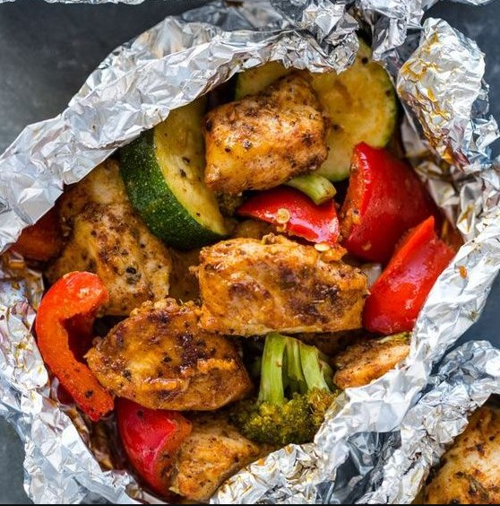

Menú
Desayunos
Tosta de aguacate con anchoas y tomates cherry.
$10.000
1 rebanada de pan de hogaza, 1 aguacate maduro,
1 lata de anchoas en aceite, 4 tomates cherry y cebollino fresco.
Pagar
Tostas de tomate y mozzarella con mortadela.
$20.000
2 rebanadas grandes de pan de hogaza, 2 tomates en rama (u otra variedad sabrosa),
1 mozzarella fresca, 4 lonchas de mortadela de Bolonia,
aceite de oliva virgen extra, alcaparras, pimienta negra molida y sal gorda.
Pagar
Gofres keto o "chaffles.
$8.000
1 huevo M, 30 g de clara de huevo, 100 g de mozzarella,
1 cucharada de almendra molida, 1/2 cucharadita de sal,
pimienta negra y especias o hierbas.
Pagar
Gofres keto o "chaffles.
$12.000
400 g de yogur natural, 1/2 cucharadita de levadura
seca de panadería o 3 g de levadura fresca,
300 g de harina de fuerza, 90 g de harina integral,
1 cucharadita de sal.
Pagar
Bizcocho de yogur.
$11.000
1 yogur natural o de limón, 1 medida de aceite, 2 medidas de azúcar, 3 medidas de harina de
repostería, 1/2 sobre de levadura (8 g), 3 huevos, ralladura de limón opcional.
Pagar
Almuerzos
Arroces y pasta.
$25.000
El arroz blanco y la pasta son dos alimentos baratos,
relativamente fáciles de preparar y muy socorridos en pisos de estudiantes o recién independizados.
Pagar
Pescados y mariscos.
$30.000
El pescado también es otro de esos productos que causa algo de respeto a los más principiantes. Sin embargo,
son un alimento fantástico, fuente de proteínas de gran calidad y muy rápido de cocinar.
Pagar
Solomillo de cerdo.
$35.000
El solomillo de cerdo es también muy sencillo de cocinar; cocínalo a la plancha cortado en filetes.
Pagar
Bocadillos y sándwiches.
$27.000
Aprovecha cuando puedas ciertas sobras para prepararte bocadillos deliciosos,
como el típico pollo asado, e intenta invertir en un buen pan de calidad.
Pagar
Ensalada de lechuga.
$24.000
Hay que reconocer que las bolsas de cuarta gama, las típicas ensaladas y hojas verdes ya cortadas y
lavadas listas para consumir, nos solucionan muchas molestias, pero no son un recurso al que recurrir siempre.
Pagar
Almuerzos

Pollo con verduras al papillote.
$25.000
Una opción muy inteligente, ya que resulta bastante más rápida.
Y el pollo es una magnifica fuente de proteínas.
Pagar
Salmón crujiente con patatas y espárragos.
$30.000
Sencillo y nutritivo. Hazlo a la plancha para que quede crujiente y aderézalo con sal gorda, perejil y ajo en polvo.
Puedes servir las patatas cocidas para que el plato sea mucho más saludable.
Pagar
Falso sándwich de tortilla.
$15.000
Con un par de huevos puedes hacer una tortilla francesa.
Divídela a la mitad y rellénala de jamón, queso y lechuga como si fuese un sándwich.
Pagar
Brocheta de coles con salsa de cacahuete.
$27.000
Saltea las coles en una sartén con un poco de aceite. Para la salsa:
mezcla una cucharadita de salsa de soja, una cucharada de crema de cacahuete y semillas de sésamo.
Pagar
Salmón al horno con salsa de yogur.
$24.000
Puedes hacer una salsa de yogur casera mezclando un yogur natural con limón, un diente de ajo triturado, sal, pimienta y AOVE.
La combinación con el salmón te conquistará.
Pagar
Fecha de reserva
Enviar